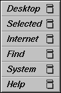

Computer Development Resources
PIRCS systems
URL: http://www.iitap.iastate.edu/ees/intranet
This file contains some reference to the development
environments on the PIRCS systems. I wont deal with things
such as configurations of vi or emacs to interface with compilers
but I will provide some information of various sytax analysers (ftncheck
and others) and some other utilities for code development.
One very nice system is CaseVision, which is part of the SGI
Varsity program. CaseVision is installed on both O2's and is composed of
several utilites.
Some utilities I will expand on
PlusFORT
PlusFORT is a very sophisticated package which can analyze, beautify, and improve your
Fortran codes. The package is quite a bit more difficult to use than is FTNCHEK (see
below), but can do much more. It claims to handle all VAX/VMS extensions. I found that it
will accept things such as STRUCTUREs, but does not do much with them other than parse them
(sometimes incorrectly computing the size.) A free subset of the complete version is
available for Linux platforms. Visit the PlusFORT/Linux Page for more information.
FTNCHEK
FTNCHEK is a Fortran-77 parser which will make a nice listing file, construct a subroutine
call tree (a sort of flow diagram for your program), and list all variables with their
types. It also can do extensive syntax checking, and detects many classes of errors in ANSI
fortran-77 code. f2c will do none of this for you (except for find the coding errors, if
they are severe enough.) The FTNCHEK listing file can be made to look very much like VAX
Fortran's FOR/LIS output.
Forcheck
Forcheck is a Fortran 77 and Fortran 90 parser which verifies the syntax of program units
and the consistency of the entire program. It has been developed by Leiden University in
the Netherlands, but it is a commercial product. The following information comes from the
Forcheck Group at Leiden: "It warns for all kinds of anomalies such as unassigned or
unreferenced items. It produces listings and cross-references of all syntax items. For the
global program it provides a call-tree, a subprogram index, and cross-references of
procedures, i/o, include files, common blocks and even common-block elements. Forcheck
supports most Fortran language extensions of many compilers and can be tuned easily by the
user. It can be used as a software engineering tool for small up to very large projects."
asa
This is an output filter for your Fortran output files. It looks at the Hollerith
carriage-control strings in the first character position in each line (those pesky "0",
"1", and "+" characters) and converts them into control codes understood by programs like
"more" and by Unix printer software. This code should also work on other Unix systems.
CaseVision
On the O2 you can issue the command ProDev_cbt (/usr/sbin/ProDev_cbt)
to take an interactive tour of these resources. It will do a much better
job of describing them than I can, but I will make some references here.
As that tour is a 40 meg mutli-media package, I have installed it only
on one of the O2's (the one not near the far wall).
If you are at the machine you can go to the Toolchest menu bar (most likely
to bein the upper left) and select "Find", then select "Developermagic".
You will be given a window with links to the various apps and the interactive
tour (if on the correct machine).
 The toolchest menu window
The primary components are (with some of their man comments):
- cvbuild:
Cvbuild provides a graphical display of build dependency
information, as determined from a description file for make
- cvmake:
Cvmake is a program building tool designed to help programmers
quickly compile their programs, find errors, edit the source files, and recompile.
- cvperf:
cvperf presents a graphical display of the performance data gathered in a
WorkShop Performance experiment whose experiment directory is given by
.
cvperf can also present the display of performance information from a
pixie counts file given by
- cvstatic:
Cvstatic is a source code analysis tool designed to help programmers
understand the structure of a program. Cvstatic allows the programmer to
ask questions about a collection of files, such as "Who calls this
function", or "Who references this variable". Cvstatic supports C, C++,
and Fortran, and provides various ways to look at your program structure
graphically, in addition to providing textual results of queries.
- cvd:
cvd invokes the WorkShop Debugger.
The executable used with the debugger is produced by specifying an
appropriate option (usually -g) to the compiler. When the executable
parameter is specified, the WorkShop Debugger will be invoked with the
specified executable as the target. Breakpoints and other traps may then
be set on the executable before running the program.
There is also rapid app, which is primary for the rapid GUI program building
and would primary be used for C/C++ projects with graphical front ends. The
CaseVision utilites work for C/C++ or Fortran (or Ada, Pascal or Fortran 90
but I have not installed these compilers).